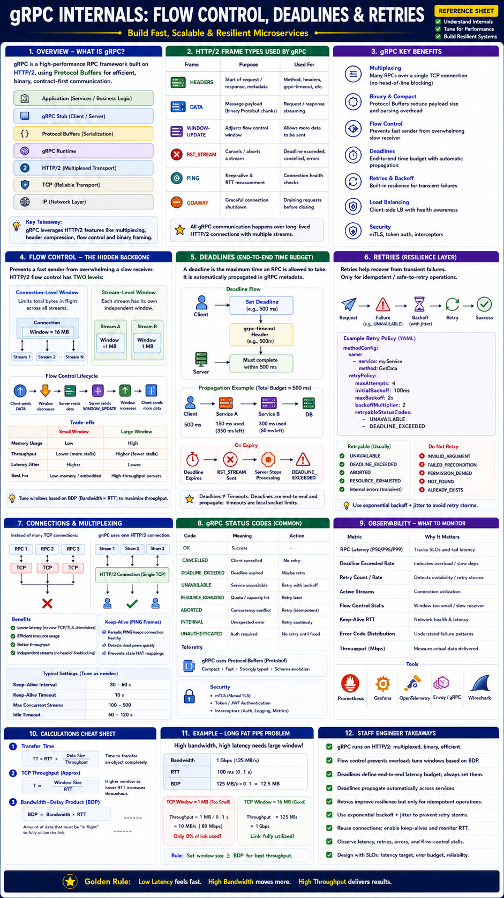

Staff Engineer Reference — Distributed Systems & Networking
Modern microservices make thousands of RPC calls per second. At this scale, performance is determined not just by business logic, but by how efficiently the RPC framework manages:
gRPC Stack
Unlike REST/HTTP 1.1, gRPC uses persistent HTTP/2 connections with binary framing — no text overhead, multiplexed streams.
HTTP/2 Frame Types Used by gRPC
| Frame | Purpose |
|---|---|
HEADERS | Start request/response, carry metadata |
DATA | Protobuf message payload |
WINDOW_UPDATE | Expand flow-control window |
PING | Keep-alive + RTT measurement |
RST_STREAM | Cancel a stream |
GOAWAY | Graceful connection shutdown |
Without flow control, a fast producer overwhelms a slow consumer, exhausting memory and crashing the server. Flow control acts as transport-level backpressure.
Connection-Level Window
Limits total bytes in flight across all streams on a connection.
Stream-Level Window
Each RPC stream has its own independent window — one slow stream pauses without blocking others.
Flow Control Lifecycle
| TCP Flow Control | HTTP/2 Flow Control |
|---|---|
| Per connection only | Per stream + per connection |
| Managed by kernel | Managed by gRPC/HTTP2 runtime |
| Prevents receiver overload | Prevents stream starvation + HOL blocking |
| Small Window | Large Window |
|---|---|
| Low memory usage | Higher memory usage |
| Lower throughput | Higher throughput |
| More WINDOW_UPDATE frames | Fewer updates |
| Better for constrained devices | Better for backend servers |
A deadline is the absolute time limit for completing an RPC — the client sets it before calling, and it flows through the system as the grpc-timeout header.
Deadline Propagation — The Key Staff Engineer Concept
What Happens on Expiry
| Deadline | Timeout | |
|---|---|---|
| Scope | End-to-end latency budget | Local wait limit |
| Propagation | Automatic via grpc-timeout header | Local only |
| Shared | Across all services in call chain | Independent per client |
| Preferred in gRPC | ✅ Yes | Fallback |
ctx.Done() in server handlers to cancel work earlyFailures are often transient (network blip, server restart, LB failover). Retries improve resilience — but only when used carefully.
Retry Policy
Retryable Status Codes
| Status | Retry? |
|---|---|
| UNAVAILABLE | ✅ Yes — temporary outage |
| DEADLINE_EXCEEDED | ⚠️ Only if budget allows |
| ABORTED | ✅ Transaction conflict |
| RESOURCE_EXHAUSTED | ⚠️ Sometimes, after delay |
| INVALID_ARGUMENT | ❌ No — permanent |
| PERMISSION_DENIED | ❌ No — permanent |
| INTERNAL | ❌ No — unexpected |
Idempotency — Required for Safe Retries
| Safe to Retry | Avoid Retrying |
|---|---|
| Read RPCs | Payment processing |
| Metadata lookups | Inventory deduction |
| Configuration fetches | Order creation |
| Search queries | Account creation |
For non-idempotent writes that require retries: use idempotency keys so duplicate requests are deduplicated server-side.
Prevention: Exponential backoff + jitter, retry budgets (max % of RPCs retried), circuit breakers, deadline-aware retries (stop if overall budget exceeded).
❌ Without gRPC (per-request connection)
✅ With gRPC (persistent HTTP/2)
HTTP/2 PING Keep-Alive
PING frames periodically verify the connection is alive, detect broken peers, prevent stale NAT mappings, and measure RTT.
| Parameter | Typical Value |
|---|---|
| Keep-Alive Interval | 30–60 s |
| Keep-Alive Timeout | 10 s |
| Idle Timeout | 60–120 s |
| Code | Meaning |
|---|---|
OK | Success |
CANCELLED | Client cancelled the request |
DEADLINE_EXCEEDED | Deadline expired before completion |
UNAVAILABLE | Temporary service outage — retry |
RESOURCE_EXHAUSTED | Capacity exceeded (rate limit, quota) |
ABORTED | Concurrency conflict (transaction) |
INTERNAL | Unexpected server error |
UNAUTHENTICATED | Authentication required |
PERMISSION_DENIED | Authorized but not allowed — do not retry |
INVALID_ARGUMENT | Bad request — do not retry |
Metrics to Monitor
| Metric | Purpose |
|---|---|
| RPC latency P50/P95/P99 | SLO tracking |
| DEADLINE_EXCEEDED rate | Overload detection |
| Retry count / retry rate | Detect retry amplification |
| Active streams | Connection utilization |
| Flow-control stalls | Window tuning signal |
| Keep-alive RTT | Network health |
| Error code distribution | Failure classification |
Production Tuning Parameters
| Parameter | Typical Range |
|---|---|
| Max Concurrent Streams | 100–500 |
| Flow Control Window | 1–16 MB |
| Keep-Alive Interval | 30–60 s |
| Idle Timeout | 60–120 s |
| Max Message Size | 4–32 MB |
| Max Retry Attempts | 3–4 |
| Initial Backoff | 100–500 ms |
| Deadline | P99 latency + safety margin |
| Use Case | Recommended Strategy |
|---|---|
| Microservices | Long-lived HTTP/2 connections + deadline propagation |
| API Gateway | Deadline propagation + retry with budgets |
| Streaming Logs | Bidirectional streaming + tuned flow control |
| Cross-Region RPC | Larger flow-control windows (BDP-aware) |
| Kubernetes Control Plane | Deadlines + keep-alive + retries |
| Service Mesh (Envoy/Istio) | xDS load balancing + retry budgets |
| Level | Thinking Pattern |
|---|---|
| Junior | "gRPC is like REST but faster. I'll set a 30s timeout so requests don't hang forever." |
| Senior | "I configure gRPC with deadlines, retry on UNAVAILABLE with exponential backoff, and reuse connections across requests. I set max message size and keep-alive to prevent connection drift." |
| Staff | "I treat gRPC deadlines as end-to-end latency budgets — each service propagates the remaining time, not the original. I size flow-control windows to the BDP of each link (bandwidth × RTT) to avoid underutilizing high-speed connections. Retries are configured only for idempotent, transient failures (UNAVAILABLE, ABORTED) with exponential backoff, jitter, and a retry budget (max 10% of RPCs) to prevent storms. I monitor DEADLINE_EXCEEDED rate as an overload signal, flow-control stall time as a window-tuning signal, and retry rate as an amplification signal. For cross-region gRPC, I tune initial flow-control windows to 8–16 MB and confirm via ss -ti that windows aren't constraining throughput." |
